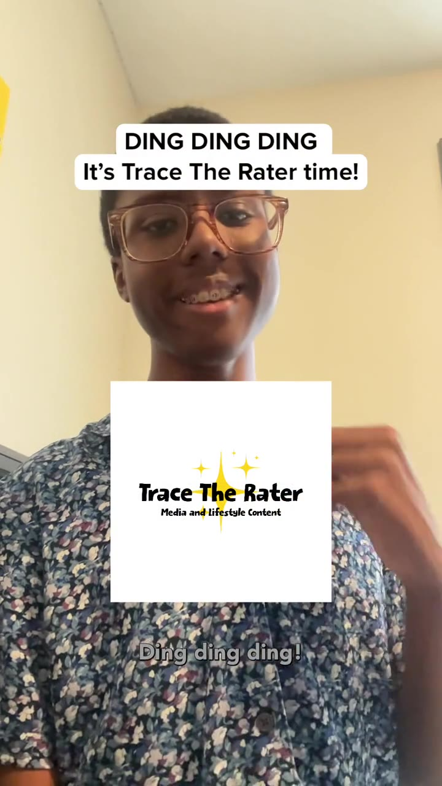

Articles
Entertainment news, reviews, and commentary in my own words. Pull up a story and let’s talk television, film, games, and music.
Ranking Four Music Genres From Worst to Best: Hip-Hop, R&B, Rock, and Pop
Hip-Hop/Rap takes my top spot, followed by R&B, Rock, and Pop. Here’s why their musical characteristics resonate with me—and why Rock and Pop could switch places.
Read the ranking →Artificial Intelligence: A Powerful Tool, But Humans Still Matter!
The AI tools I use, how they help Trace The Rater, and why human creativity, verification, and responsible use still matter.
Read and watch →
What Entertainment Is Wichita Missing? My Ideas for the Air Capital!
My Wichita entertainment wish list: immersive attractions, creative rides, and social spaces—plus appreciation for the places we already have.
Read and watch →Remembering Eric Bauza: The Voice Behind Modern Looney Tunes Dies at 46
Remembering the versatility, laughter, and unforgettable performances of a beloved voice in modern animation.
Read the tribute →Ranking the Five Types of Television: Which One Is the Best?
DING DING DING! Five types of television, one winner, and a tie for second place. Here’s my personal ranking!
Read the story →How My Rating System Works: Music, TV, Movies & Video Games
WE’RE DOING THE MATH! How I calculate averages, handle unrated items, and think about perfect scores across entertainment.
Read the story →The Sunnyridge 3 brings a strange mall mystery to Disney
A strange mall, three lifelong friends, and an early look at Disney’s upcoming comedy-mystery. Here’s what catches my eye.
Read the story →